Fiches CM1
2990 fiches d'exercices CM1 en français : lecture, texte à trous et compréhension orale, à imprimer (PDF) avec corrigé.
2.990 ressources
Thème
Chelles – Fiche de géographie : texte à trous, compréhension orale et mots mêlés
Beauvais – Fiche : texte à trous, compréhension orale et mots mêlés
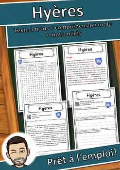
Hyères – Fiche de géographie : texte à trous, compréhension orale et mots mêlés
Maisons-Alfort – Fiche : texte à trous, compréhension orale et mots mêlés
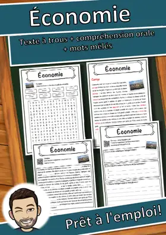
Économie – Fiche CM1-CM2 : texte à trous, compréhension orale et mots mêlés
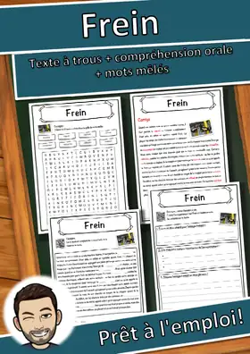
Frein – Fiche CM1-CM2 : texte à trous, compréhension orale et mots mêlés
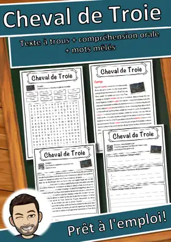
Cheval de Troie – Fiche CM1-CM2 : texte à trous, compréhension orale et mots mêlés
Tabac – Fiche CM1-CM2 : texte à trous, compréhension orale et mots mêlés
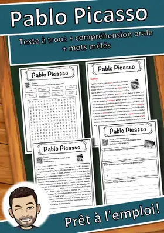
Pablo Picasso – Fiche CM1-CM2 : texte à trous, compréhension orale et mots mêlés
Claude Ptolémée – Fiche CM1-CM2 : texte à trous, compréhension orale et mots mêlés
Capitalisme – Fiche CM1-CM2 : texte à trous, compréhension orale et mots mêlés
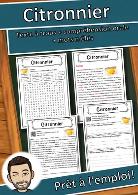
Citronnier – Fiche CM1-CM2 : texte à trous, compréhension orale et mots mêlés
Capsicum – Fiche CM1-CM2 : texte à trous, compréhension orale et mots mêlés
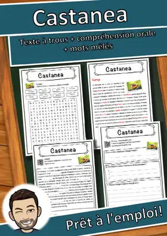
Castanea – Fiche CM1-CM2 : texte à trous, compréhension orale et mots mêlés
État de droit – Fiche CM1-CM2 : texte à trous, compréhension orale et mots mêlés
Gomme à effacer – Fiche CM1-CM2 : texte à trous, compréhension orale et mots mêlés
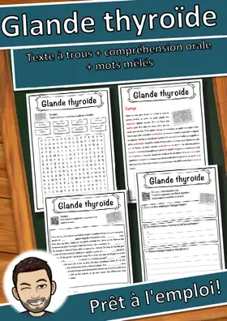
Glande thyroïde – Fiche CM1-CM2 : texte à trous, compréhension orale et mots mêlés
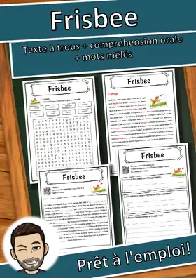
Frisbee – Fiche CM1-CM2 : texte à trous, compréhension orale et mots mêlés
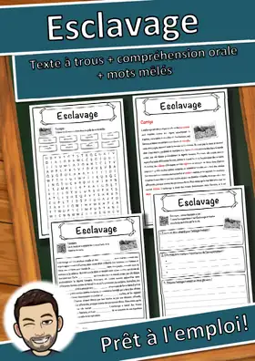
Esclavage – Fiche CM1-CM2 : texte à trous, compréhension orale et mots mêlés
Entreprise – Fiche CM1-CM2 : texte à trous, compréhension orale et mots mêlés
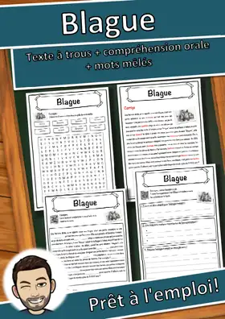
Blague – Fiche CM1-CM2 : texte à trous, compréhension orale et mots mêlés
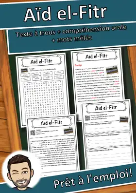
Aïd el-Fitr – Fiche CM1-CM2 : texte à trous, compréhension orale et mots mêlés
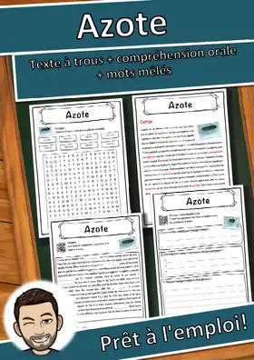
Azote – Fiche CM1-CM2 : texte à trous, compréhension orale et mots mêlés
Aurore polaire – Fiche CM1-CM2 : texte à trous, compréhension orale et mots mêlés
Asthme – Fiche CM1-CM2 : texte à trous, compréhension orale et mots mêlés
Arabie saoudite – Fiche CM1-CM2 : texte à trous, compréhension orale et mots mêlés
Théorie de la relativité – Fiche CM1-CM2 : texte à trous, compréhension orale et mots mêlés
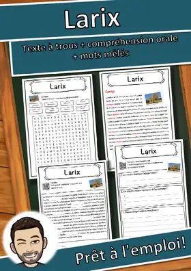
Larix – Fiche CM1-CM2 : texte à trous, compréhension orale et mots mêlés
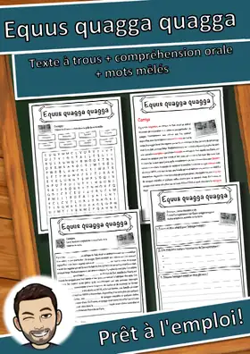
Equus quagga quagga – Fiche CM1-CM2 : texte à trous, compréhension orale et mots mêlés
Caoutchouc naturel – Fiche CM1-CM2 : texte à trous, compréhension orale et mots mêlés
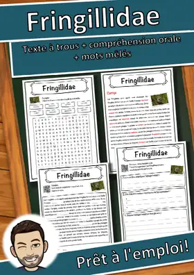
Fringillidae – Fiche CM1-CM2 : texte à trous, compréhension orale et mots mêlés
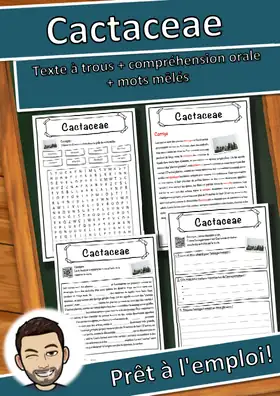
Cactaceae – Fiche CM1-CM2 : texte à trous, compréhension orale et mots mêlés
Raton laveur – Fiche CM1-CM2 : texte à trous, compréhension orale et mots mêlés
Chou-rave – Fiche CM1-CM2 : texte à trous, compréhension orale et mots mêlés
Chou-fleur – Fiche CM1-CM2 : texte à trous, compréhension orale et mots mêlés

Science de la nature – Fiche CM1-CM2 : texte à trous, compréhension orale et mots mêlés
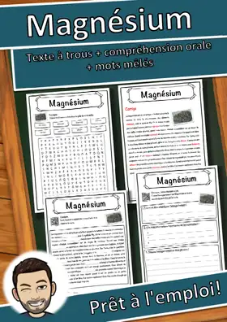
Magnésium – Fiche CM1-CM2 : texte à trous, compréhension orale et mots mêlés
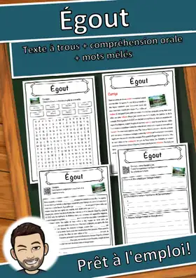
Égout – Fiche CM1-CM2 : texte à trous, compréhension orale et mots mêlés
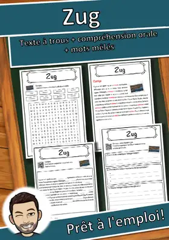
Zug – Fiche CM1-CM2 : texte à trous, compréhension orale et mots mêlés
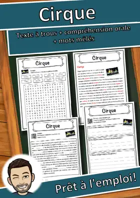
Cirque – Fiche CM1-CM2 : texte à trous, compréhension orale et mots mêlés
Ukraine – Fiche CM1-CM2 : texte à trous, compréhension orale et mots mêlés
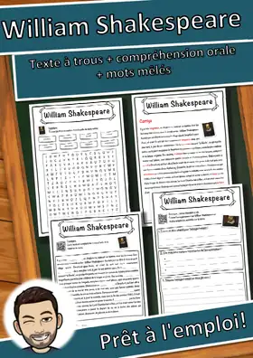
William Shakespeare – Fiche CM1-CM2 : texte à trous, compréhension orale et mots mêlés
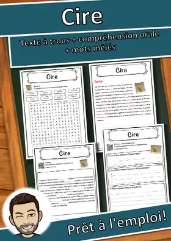
Cire – Fiche CM1-CM2 : texte à trous, compréhension orale et mots mêlés
Thulium – Fiche CM1-CM2 : texte à trous, compréhension orale et mots mêlés
Tellure – Fiche CM1-CM2 : texte à trous, compréhension orale et mots mêlés
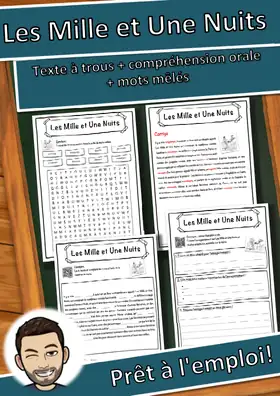
Les Mille et Une Nuits – Fiche CM1-CM2 : texte à trous, compréhension orale et mots mêlés
Oie – Fiche CM1-CM2 : texte à trous, compréhension orale et mots mêlés
Texte – Fiche CM1-CM2 : texte à trous, compréhension orale et mots mêlés
Aucune ressource trouvée – essaie un autre mot ou un autre filtre.